Scheme_EulerForward class
Contents
Description
This is a sub-class of the Scheme class for the implementation of the time integration scheme Forward Euler.
- Translational motion:
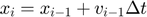
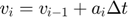
- Rotational motion:
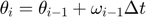
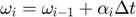
- Thermal state:
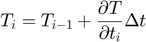
Notation:
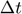: Time increment
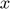: Coordinates
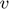: Translational velocity
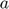: Translational acceleration
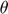: Angular orientation
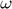: Angular velocity
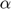: Angular acceleration
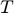: Temperature
classdef Scheme_EulerForward < Scheme
Constructor method
methods
function this = Scheme_EulerForward()
this = this@Scheme(Scheme.EULER_FORWARD);
end
end
Public methods: implementation of super-class declarations
methods
%------------------------------------------------------------------
function updatePosition(~,p,dt)
p.coord = p.coord + p.veloc_trl * dt;
p.veloc_trl = p.veloc_trl + p.accel_trl * dt;
end
%------------------------------------------------------------------
function updateOrientation(~,p,dt)
p.orient = p.orient + p.veloc_rot * dt;
p.veloc_rot = p.veloc_rot + p.accel_rot * dt;
end
%------------------------------------------------------------------
function updateTemperature(~,p,dt)
p.temperature = p.temperature + p.temp_change * dt;
end
end
end